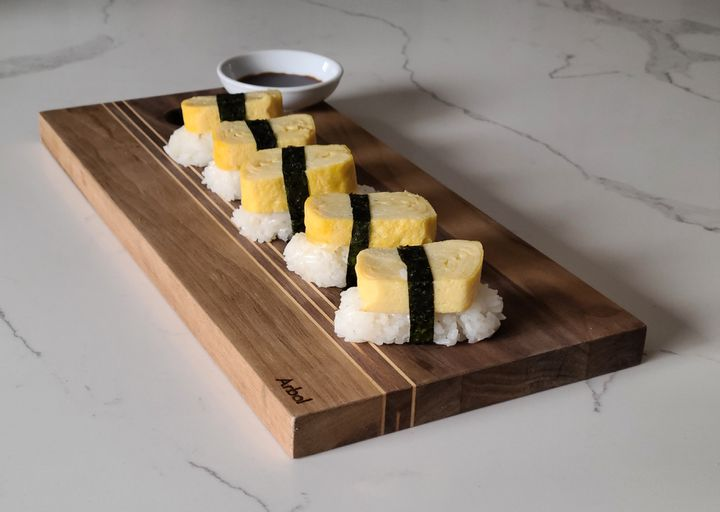

Japanese Tamago Egg

Tamago is a Japanese rolled omelet, also known as tamagoyaki. The omelet is sweet, has a light texture, and works well when served over sushi rice with soy and wasabi sauce for dipping.
Ingredients
- Eggs
- Dashi stock
- Sugar
- Mirin
- Soy Sauce
- Oil
Steps
- Beat the eggs thoroughly in a bowl; whisk in dashi stock, sugar, mirin, and soy sauce until sugar has dissolved.
- Grease the skillet over medium heat.
- Pour a thin layer of egg mixture into the hot pan and swirl to coat the pan. Cook until egg layer is firm on the bottom but still slightly liquid on top, about 1 minute. Then lift up one edge using a spatula and roll up the egg layer. Push omelet roll to one side of the skillet. Oil the skillet again and pour in another thin layer of egg, lifting the first omelet roll up slightly to allow the egg to flow underneath; roll up the first omelet in the new layer of egg and push omelet to the edge of the skillet as before. Repeat the process with the remaining egg mixture, oiling the pan each time if needed.
- Remove rolled omelet to a serving platter and cut into 6 equal pieces to serve.